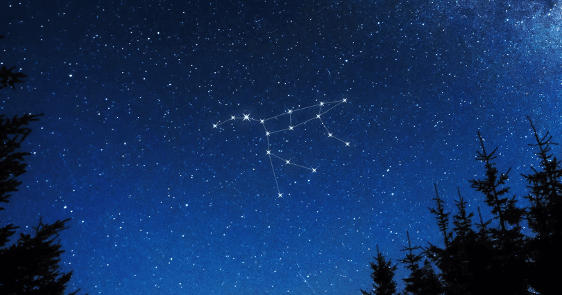

1 / 3

A Winter Constellation
ORION THE GREAT HUNTER: Named after a mythological greek hero, in pursuit of Medusa. Start by
identifying a row of 3 stars close together (the Orion Belt). (Img Credit: starregistration.net)
2 / 3

A Constellation All Year Round
THE BIG BEAR: Identify it by its brightest stars, the Plough (the bear tail). A film for inspiration: the Golden Compass. (Img Credit: starregistration.net)
3 / 3

An Artist Depicts: A Summer Constellation
CYGNUS THE SWAN: Identify it by the Summer Triangle, the three bright stars directly above the observer. (Img Credit: bbc.co.uk)
❮
❯
1 / 3
Darkly, deeply, beautifully blue - the sky. -George Byron Gordon
2 / 3
"There was always something new to be seen in the
unchanging night sky." - Fritz Leiber
3 / 3
To fly up to the sky and watch the earth is beautiful;
to fly down to the earth is even more beautiful! -Mehmet Murat Idan
❮
❯